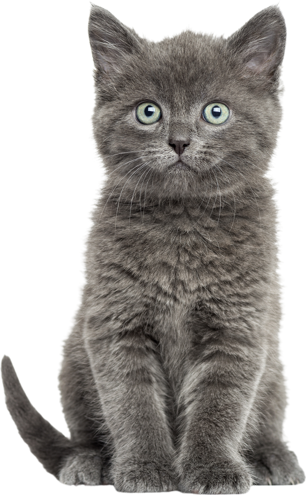
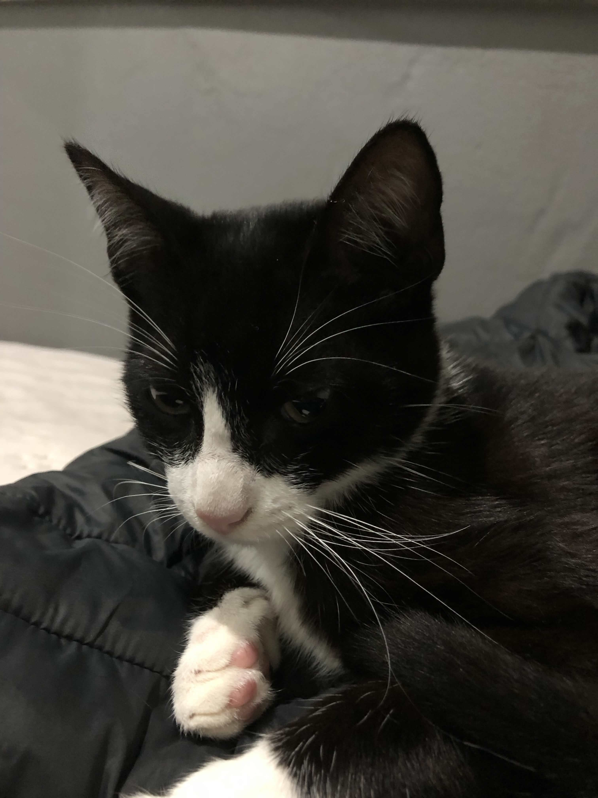
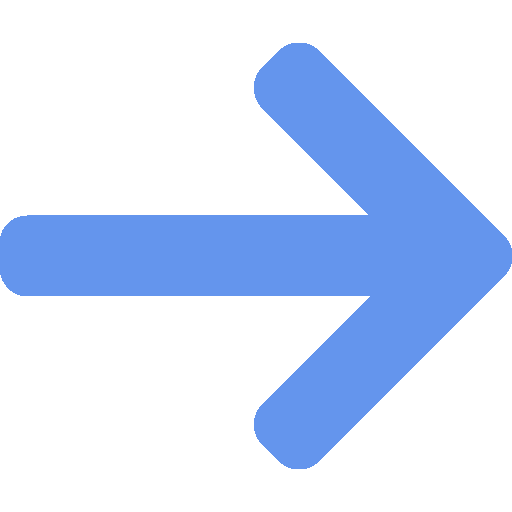

Encontre seu novo
melhor amigo
Cada patinha tem uma história.
Aqui você encontra cães e gatos que aguardam
uma segunda chance para receber amor, cuidado e um lar definitivo.


Cada patinha tem uma história.
Aqui você encontra cães e gatos que aguardam
uma segunda chance para receber amor, cuidado e um lar definitivo.

Conheça alguns dos nossos pets que estão esperando por um lar amoroso

Ver todos os pets disponíveis para adoção

Um processo simples e transparente para garantir uma adoção responsável
1
Navegue e encontre o companheiro perfeito para você
2
Entre em contato com a ONG ou protetor responsável pelo animal
3
Agende uma visita para conhecer o pet pessoalmente
4
Assine o termo de adoção responsável e leve seu novo amigo para casa
Descubra os benefícios de trazer um novo amigo para sua família
Ganhe um companheiro leal que estará ao seu lado sempre
Dê uma segunda chance a um animal que precisa de um lar
Receba orientação e acompanhamento das ONGs parceiras